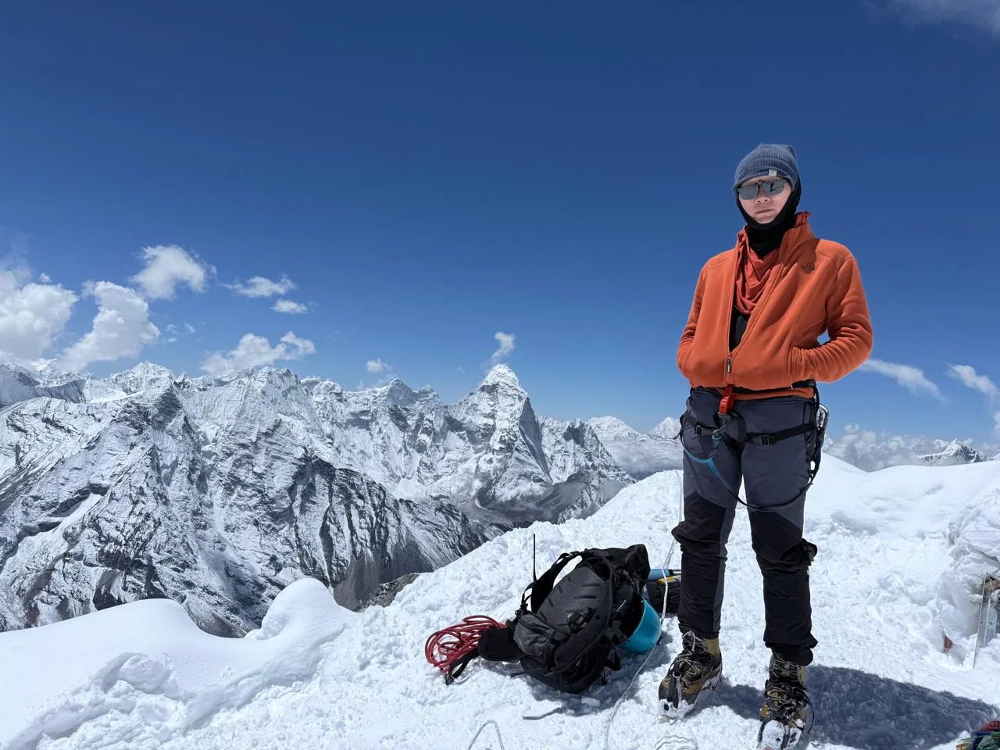
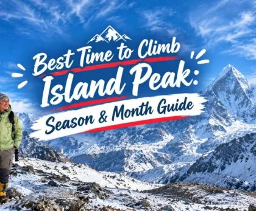

1. Island Peak Seasonal Overview: The Two Premier Climbing Windows
Rising majestically above the upper Chhukung Valley in the Everest (Khumbu) region of Nepal, Island Peak (Imja Tse, 6,189 m / 20,305 ft) is the world’s most sought-after introductory Himalayan climbing peak. First named "Island Peak" by Eric Shipton’s 1953 British Mount Everest reconnaissance expedition because it resembled an island surrounded by a sea of ice, this peak serves as the ultimate stepping stone for trekkers transitioning into technical high-altitude mountaineering.
However, unlike standard trekking routes where hikers can simply put on waterproof boots and carry an umbrella, climbing a 6,000-meter glaciated peak requires navigating technical terrain. Summit day involves crossing an active glacier riddled with crevasses, negotiating aluminum ladder bridges, ascending a near-vertical 100-meter headwall (45°–50° angle) using fixed ropes and a mechanical ascender (jumar), and balancing across an exposed knife-edge snow ridge to reach the summit.
Consequently, your timing is the single most critical decision of the entire expedition. The Himalayan weather cycle divides the calendar into four distinct periods: Spring, Autumn, Monsoon, and Winter. Understanding the atmospheric mechanics of each window ensures you tackle the glacier when snow bridges are secure, winds are manageable, and temperatures remain within survivable thresholds.
At 6,189 meters, the effective atmospheric oxygen level is approximately 47% of sea-level value. At this extreme altitude, your body’s metabolic ability to produce heat and fight off frostbite is drastically impaired. A moderate 35 km/h wind that feels brisk at 3,000 meters creates a life-threatening windchill of -30°C at the summit ridge. Choosing a stable, high-pressure weather window is not just about clear views—it is essential for survival.
2. Spring Climbing Season (March, April, May): Conditions & Pros/Cons

The Spring pre-monsoon season (March through May) is universally celebrated as one of the two premier windows for summitting Island Peak. As the brutal winter jet stream shifts northward across the Tibetan plateau, temperatures steadily rise, daylight hours lengthen, and the lower Khumbu valley bursts into vibrant scarlet rhododendron blooms.
Here is how each month within the Spring climbing window behaves on the mountain:
- March (Early Spring): A shoulder month marked by the transition away from winter. Early March remains very cold, with night temperatures at Island Peak Base Camp (5,200m) hovering around -12°C to -15°C, and summit push temperatures plunging to -20°C. Lingering winter snow packs the rocky scrambles above Crampon Point. Trail traffic is sparse, and teahouses in Dingboche and Chhukung are peaceful. If you have solid cold-weather endurance, late March offers fantastic, uncrowded climbing.
- April (The Spring Sweet Spot): Widely regarded as the premier month of the spring season. Daytime temperatures at Chhukung reach a comfortable 10°C to 14°C, while summit push nights register between -10°C and -14°C. Crucially, the snowpack on the Imja Glacier is consolidated: snow bridges across the bergschrund are solid, and the 100-meter headwall consists of packed snow where crampon front-points bite easily without shattering brittle ice.
- May (Late Spring): The warmest climbing month of the year. Base camp is comfortable, with daytime sun often prompting climbers to strip down to base layers. The headwall is soft, allowing climbers to kick deep, secure steps. However, as the monsoon builds in the Bay of Bengal, afternoon convective clouds roll up the valley earlier each day (often by 11:00 AM). To avoid descending in slushy snow or zero-visibility fog, May summit pushes require strict midnight alpine starts.
Advantages of Spring Climbing
- Warmer Temperatures: Progressively milder weather reduces the risk of frostbite on toes and fingertips.
- Better Snow Cover: Snow fills dangerous crevasses and creates easier step-kicking on the 45° headwall compared to bare ice.
- Expedition Atmosphere: The Khumbu valley buzzes with energy as elite teams head to Everest, Lhotse, and Nuptse Base Camps.
- Lush Approach: The trek from Lukla through Namche and Tengboche is framed by blooming rhododendrons and rushing rivers.
Drawbacks of Spring Climbing
- Afternoon Cloud Buildup: Pre-monsoon thermal activity often produces afternoon clouds and localized snow flurries.
- Softening Snow on Descent: Strong solar radiation can turn the glacier into energy-sapping slush by midday.
- Hazy Distant Views: Lower valley air can carry fine dust haze from the plains, slightly softening long-range mountain photography.
- High Base Camp Traffic: Mid-April to early May sees significant climbing permit volume on Island Peak.
3. Autumn Climbing Season (September, October, November): The Post-Monsoon Gold Standard

The Autumn post-monsoon season (late September through November) is universally regarded by high-altitude mountaineering guides as the gold standard for climbing Island Peak. The summer monsoon washes every trace of airborne dust and pollution from the atmosphere, leaving behind crisp, sapphire-blue skies and unmatched visual clarity.
Here is how the autumn season unfolds across the Khumbu:
- Late September (Transition): The monsoon tail winds down between September 15 and 25. While occasional afternoon rain showers can occur in the lower valleys, the upper mountains rapidly dry out. The air is remarkably clean, the valleys are lush and green, and early autumn climbers enjoy solitude before the October rush.
- October (The Ultimate Climbing Month): October is statistically the single most reliable month of the year for summitting Island Peak, boasting summit success rates approaching 86%. Massive high-pressure weather systems stall over the central Himalayas, delivering day after day of windless, crystal-clear mornings. Temperatures are cold but predictable (-12°C to -16°C at summit dawn), and the views of Ama Dablam, Lhotse, and Makalu are breathtaking.
- November (Late Autumn / Pre-Winter): November offers pristine, cloudless skies from dawn to dusk, but temperatures drop steadily. By mid-November, summit night temperatures reach -20°C to -24°C, and westerly winds accelerate. On the mountain, months of dry weather and wind ablation strip surface snow from the headwall, exposing hard, bullet-like blue glacier ice. This requires confident front-pointing with sharp technical crampons and strong calf muscles.
Advantages of Autumn Climbing
- Unbeatable Visibility: Razor-sharp views stretching over 100 kilometers across the Everest and Makalu massifs.
- Rock-Solid Weather Stability: Sustained multi-day high-pressure systems minimize the risk of storm-related turnarounds.
- Dry Mountain Trails: The approach hike from Lukla to Dingboche features dry, mud-free trekking paths.
- Statistically Highest Success: October records the highest percentage of successful summit bids across all commercial expeditions.
Drawbacks of Autumn Climbing
- Rapidly Dropping Temperatures: November nights are significantly colder than April and May, demanding warmer sleeping bags.
- Hard Blue Ice on the Headwall: Bare glacier ice requires greater technical competence and sharper crampons than spring snow.
- Wider Crevasses: Summer melt often widens crevasses, necessitating careful navigation across aluminum ladders.
- Peak Season Demand: Flights from Ramechhap/Kathmandu to Lukla and popular teahouses in Dingboche book out months in advance.
4. Month-by-Month Weather, Temperature & Summit Success Comparison Table
To help you accurately plan your expedition dates, here is an in-depth reference breakdown of meteorological conditions, temperature ranges, wind speeds, and historical summit success rates on Island Peak across all twelve months of the year:
| Month | Base Camp Day (°C) | Summit Night (°C) | Avg Wind (km/h) | Headwall Condition | Summit Success Rate | Overall Recommendation |
|---|---|---|---|---|---|---|
| January | -6°C to -10°C | -26°C to -32°C | 40 – 70 km/h | Hard, brittle blue ice | ~25% – 35% | Extreme Cold (Avoid) |
| February | -4°C to -8°C | -24°C to -28°C | 35 – 60 km/h | Hard frozen ice & sastrugi | ~35% – 45% | Severe Alpine (Advanced) |
| March | 2°C to 6°C | -16°C to -20°C | 20 – 35 km/h | Mixed snow & hard pack | ~68% – 75% | Good (Quiet & Cold) |
| April | 8°C to 13°C | -10°C to -14°C | 15 – 25 km/h | Firm, consolidated snow | ~82% – 86% | Prime (Top Recommendation) |
| May | 11°C to 15°C | -6°C to -10°C | 10 – 20 km/h | Soft snow (afternoon slush) | ~80% – 84% | Prime (Warm & Early Starts) |
| June | 12°C to 16°C | -2°C to -6°C | 15 – 30 km/h | Unstable wet snow | ~20% – 30% | Monsoon (Not Recommended) |
| July | 13°C to 16°C | -1°C to -5°C | 15 – 35 km/h | Slush & high avalanche risk | <10% | Closed / High Avalanche Hazard |
| August | 13°C to 16°C | -1°C to -5°C | 15 – 35 km/h | Water-soaked snow bridges | <10% | Closed / High Avalanche Hazard |
| September | 8°C to 12°C | -8°C to -12°C | 15 – 25 km/h | Fresh snow over glacier | ~60% – 70% | Late Sep Good (Clearing) |
| October | 6°C to 10°C | -12°C to -16°C | 10 – 20 km/h | Crisp, firm snow & ice | ~84% – 88% | Gold Standard (Peak Best) |
| November | 1°C to 5°C | -18°C to -24°C | 20 – 35 km/h | Hard, exposed blue glacier ice | ~76% – 82% | Excellent (Clear & Very Cold) |
| December | -3°C to -7°C | -22°C to -28°C | 30 – 55 km/h | Bare bullet ice & high winds | ~40% – 50% | Early Dec Feasible (Very Cold) |
*Note on Temperature Discrepancies: Temperatures drop approximately 6.5°C for every 1,000 meters of elevation gain due to standard environmental lapse rates. While daytime temperatures at Chhukung (4,730m) or Base Camp (5,200m) may feel warm in the sun, summit push temperatures at 6,189m are severely affected by night radiational cooling and windchill.
5. Spring vs. Autumn Head-to-Head: Which Season Should You Choose?
Since both Spring and Autumn represent prime climbing windows, climbers frequently struggle to decide between the two. The optimal choice depends on your physical comfort with cold, your photography priorities, and your mountaineering background.
Here is a detailed comparison of the two seasons across five decisive factors:
1. Snow Conditions on the 100m Headwall
The final headwall leading to the summit ridge is the crux of Island Peak. In Spring (April–May), the headwall is typically coated in a deep layer of winter snow. Climbers can kick deep steps into the snow, and fixed ropes provide smooth progress with your jumar. In Late Autumn (November), wind and sun have stripped the snow away, exposing bare, diamond-hard blue glacier ice. Ascending bare ice requires sharp crampons, steady front-pointing technique, and significantly more calf strength.
2. Thermal Comfort and Frostbite Risk
In Spring, temperatures become progressively warmer each week. If your summit bid falls in late April or early May, temperatures on the summit ridge are manageable (-8°C to -12°C). In Autumn, the progression runs in reverse: each week of November becomes substantially colder, with dawn temperatures dropping below -22°C. For climbers prone to cold hands or Raynaud's syndrome, Spring is markedly more forgiving.
3. Atmospheric Visibility & Mountain Photography
For avid photographers seeking pristine shots of Lhotse (8,516m), Ama Dablam (6,812m), and Makalu (8,485m), October in Autumn is unbeatable. The post-monsoon air is washed completely free of dust, delivering razor-sharp contrast and deep cobalt skies. Spring skies are clear in the early mornings, but afternoon haze and thermal clouds frequently build over the valleys.
4. Glacier Crevasses and Bergschrund Crossing
Glaciers constantly move and open crevasses during the warm summer monsoon. In Spring, winter snowfall bridges many of these gaps. By Autumn, the summer melt has expanded crevasses, often requiring the climbing Sherpa team to fix one or two aluminum ladders across the bergschrund. While crossing ladders with crampons is thrilling, it requires solid nerve and balance.
5. Khumbu Trail Atmosphere
In Spring, the Everest trail is teeming with international expeditions heading to Everest Base Camp. You will share teahouses with world-class mountaineers, high-altitude doctors, and Sherpa legends. In Autumn, the atmosphere is more relaxed, with trekking groups and Ama Dablam climbing teams creating a cozy, communal lodge vibe.
Choose Spring (April–May) If:
- You prefer warmer temperatures and lower windchill risk.
- You feel more confident kicking steps in packed snow rather than front-pointing on hard blue ice.
- You want to witness blooming rhododendron forests during the approach hike.
- You want to experience the electric atmosphere of the Everest climbing season.
Choose Autumn (October–November) If:
- Crystal-clear mountain photography is your primary priority.
- You want the statistically lowest chance of weather-related summit cancellations.
- You have solid cold tolerance and high-quality 800-fill down apparel.
- You prefer dry trails and crisp, stable autumn weather patterns.
6. The Off-Season Reality: Can You Climb Island Peak in Winter or Monsoon?
Many adventurous climbers ask whether Island Peak can be climbed outside the peak windows to avoid crowds or accommodate restrictive vacation schedules. While Nepal’s trekking trails remain technically open year-round, high-altitude glaciated peaks operate under entirely different physical laws during the off-season.
Winter Climbing (December to February): Extreme Alpine Challenge
Climbing Island Peak in winter is technically possible, but it represents a severe, expedition-grade alpine undertaking:
- Brutal Cold: Summit temperatures routinely plunge between -25°C and -32°C. With even moderate 40 km/h winds, the windchill drops below -42°C, creating frostbite danger on exposed skin within minutes.
- Bullet Blue Ice: Without fresh snow, the entire 100m headwall and summit ridge are bare ice. Crampon points can glance off the surface if not razor-sharp, and ice axes bounce off the rock-hard face.
- Frozen Logistics: Base Camp water streams freeze solid, requiring hours of snow melting with white-gas stoves. Many higher teahouses in Dingboche and Chhukung shut down for winter, leaving only skeleton caretaker staff.
- The Upside: You will have the entire mountain 100% to yourself. Early December, in particular, can offer stable, crystal-clear skies for hardy climbers equipped with 8000-meter down suits and double mountaineering boots.
Monsoon Climbing (June to August): High Hazard & Not Recommended
Attempting to climb Island Peak during the summer monsoon is strongly discouraged by all reputable Nepali guiding agencies:
- High Avalanche Danger: Heavy monsoon snowfall on the upper slopes creates unstable, wet-slab snowpack on the 45-degree headwall. Solar heating triggers frequent wet snow slides and ice serac collapses.
- Hidden Crevasses: Wet, slushy snow creates fragile, deceptive snow bridges over deep crevasses that can collapse under a climber’s weight.
- Zero Visibility: Dense clouds and continuous precipitation shroud the mountain, eliminating route-finding visual references and making navigation on the glacier hazardous.
- Approach Nightmare: Lukla flights are frequently grounded for days or weeks due to heavy cloud cover, trails below Namche are infested with leeches, and monsoon landslides frequently block access roads.
7. Typical Summit Day Weather Cycle & Alpine Start Strategy

Understanding the daily atmospheric rhythm of the Khumbu valley explains why mountaineers wake up in the middle of the night. In high-altitude mountain valleys, weather follows a predictable diurnal cycle:
- Night & Dawn (11:00 PM – 08:00 AM): Radiational cooling causes heavy cold air to settle. The atmosphere is calm, winds drop to daily minimums, and sub-zero temperatures freeze the snowpack into a rock-solid crust. This is your safe window.
- Midday (11:00 AM – 03:00 PM): Solar radiation warms the valley floors, causing moisture to evaporate and rise. Convective clouds billow up the Imja valley, bringing whiteout conditions, gusty winds, and afternoon snow flurries. Crucially, solar heat weakens snow bridges across crevasses and increases rockfall danger.
Hour-by-Hour Summit Day Timeline Breakdown
To complete the climb during the calm, frozen dawn window, our expedition teams follow a precise alpine schedule:
- 11:30 PM (Wake-Up & Nutrition): Wake up at Island Peak Base Camp (5,200m). Fuel up with hot ginger tea, high-calorie porridge, and boiled eggs. Check headlamp batteries, harness buckles, and crampon bindings.
- 12:30 AM (Alpine Start from Base Camp): Step out into the darkness under a sky blazing with stars. Navigate the rocky, steep zig-zag moraine trail up to High Camp (5,600m) and the rocky scramble leading to Crampon Point (~5,800m).
- 04:30 AM (Crampon Point & Glacier Roping): Put on mountaineering crampons, harness, and helmet. Rope up into rope teams of 2 to 4 climbers. Step onto the Imja Glacier under headlamps, navigating around crevasses and crossing aluminum ladders.
- 05:30 AM (The Bergschrund & Fixed Headwall): Reach the base of the headwall as the first purple and amber light illuminates Lhotse and Ama Dablam. Attach your mechanical ascender (jumar) and safety sling to the fixed ropes installed by Sherpa guides.
- 06:00 AM – 07:30 AM (Ascending the 100m Headwall): Ascend the 45°–50° snow and ice slope using the jumar and steady front-pointing. Reaching the ridge crest requires crossing a knife-edge snow ridge with dramatic 1,000-meter drop-offs on either side.
- 07:30 AM – 08:30 AM (Summit Celebration at 6,189m): Stand atop the summit plateau of Imja Tse. Soak in the breathtaking 360-degree panorama: the 3,000-meter vertical south face of Lhotse towering right before you, Nuptse, Makalu, Baruntse, and Ama Dablam. Take celebratory photos and drink hot tea from thermoses.
- 09:00 AM (Controlled Rappel Descent): Begin the descent via controlled rappelling (abseiling) using an ATC or figure-8 belay device on the fixed lines. You must clear the glacier and crampon point before midday sun softens the snow.
- 01:00 PM – 02:00 PM (Return to Base Camp): Arrive back at Base Camp for hot soup and rest, or continue a gentle 2.5-hour hike down to Chhukung for a warm teahouse bed and celebration.
8. Acclimatization Profiles: Why It Determines Summit Success More Than Weather
While favorable weather gives you an open window, physiological acclimatization determines whether your body can actually stand on top of the mountain. Across commercial guiding statistics in the Khumbu, over 70% of failed summit attempts on Island Peak are caused by acute mountain sickness (AMS), high-altitude pulmonary edema (HAPE), or physical exhaustion—not bad weather.
Ascending directly from Lukla (2,840m) to Island Peak Base Camp (5,200m) in just 7 or 8 days without sufficient acclimatization is a recipe for failure. Your body requires time to produce additional red blood cells, adjust blood pH, and adapt to reduced atmospheric pressure.
The most successful Island Peak climbers do not rush directly to the mountain. By completing an acclimatization trek to Everest Base Camp (5,364m) and summiting Kala Patthar (5,545m) beforehand, your body adapts to 5,500 meters. When you subsequently drop down to Dingboche (4,410m) and Chhukung (4,730m) to rest before the summit push, your body feels powerful and energized.
Three Tested Acclimatization Profiles Compared
- Profile 1: Everest Base Camp + Kala Patthar First (16–18 Days) — The Gold Standard: This is our highest-recommendation itinerary with an 86% summit success rate. You trek to Namche, Dingboche, Lobuche, Gorak Shep, and Everest Base Camp, and summit Kala Patthar (5,545m). By the time you reach Island Peak Base Camp, 5,200m feels like a comfortable resting altitude.
- Profile 2: Gokyo Lakes + Cho La Pass Circuit (19–21 Days) — Advanced Scenic: Crosses the high Gokyo valley, climbs Gokyo Ri (5,357m), and traverses the glaciated Cho La Pass (5,420m) before descending into Chhukung. Offers extraordinary acclimatization, unmatched scenery, and virtually eliminates AMS risks.
- Profile 3: Chhukung Ri Direct Route (13–15 Days) — Express Option: Bypasses EBC, taking two acclimatization rest days in Namche Bazaar and Dingboche, followed by a training hike up Chhukung Ri (5,546m). Suitable for fit hikers with prior altitude experience who have limited vacation time.
9. Technical Climbing Gear & Seasonal Layering System

Mountaineering on Island Peak requires certified technical hardware and a multi-layered clothing system designed to handle temperatures ranging from +15°C in sunny valleys to -25°C at the summit ridge.
1. Mandatory Technical Mountaineering Hardware
- Mountaineering Helmet: UIAA/CE certified climbing helmet to protect against rock and ice fall.
- Climbing Harness: Adjustable alpine harness with gear loops that easily fits over bulky down pants.
- Mountaineering Crampons: Steel 12-point C2 or C3 crampons fitted with anti-balling plates to prevent snow buildup underfoot.
- Mountaineering Ice Axe: Straight-shaft classic alpine walking axe (55cm–65cm depending on your height).
- Mechanical Ascender (Jumar): Right- or left-handed Petzl Ascension ascender with a safety sling attached to your harness for ascending fixed ropes.
- Descender / Belay Device: Figure-8 or ATC guide belay device with a friction carabiner for fixed-line rappelling.
- Locking Carabiners & Prusik Cord: 3 screwgate locking carabiners and two 6mm prusik loops (1.5m and 3m lengths) for crevasse rescue and safety anchors.
2. Footwear: Double Mountaineering Boots vs. Trekking Boots
Crucial Safety Warning: Standard leather trekking boots are completely unacceptable for summit day on Island Peak. They lack thermal insulation against sub-zero glacial ice, risking severe frostbite and permanent nerve damage, and their flexible soles can cause crampons to pop off on steep headwalls.
You must wear double mountaineering boots featuring a rigid vibram sole and a removable insulated inner liner (e.g., La Sportiva G2 SM, La Sportiva Baruntse, Scarpa Phantom 6000, or Koflach Degre). In warm late May, high-end hybrid B3 single boots (such as La Sportiva Nepal Cube GTX) may suffice for experienced climbers, but double boots remain the gold standard for frostbite safety.
You do not need to buy expensive mountaineering boots or carry heavy crampons all the way from Kathmandu or Lukla. The Sherpa gear rental shops in Chhukung village (4,730m) stock high-quality, sanitized double boots, crampons, harnesses, ice axes, and jumars for roughly $40 to $60 USD for the entire summit period. You can test and fit boots the day before heading to Base Camp.
3. 4-Layer High-Altitude Clothing System
- Base Layer: Heavyweight merino wool (250g/m²) or synthetic thermal top and bottoms for moisture management.
- Mid-Layer: Polartec fleece jacket or lightweight synthetic active-insulation hoodie (e.g., Arc'teryx Atom LT / Patagonia R1).
- Hardshell Layer: Gore-Tex Pro 3-layer windproof and waterproof jacket and pants with full side zips for crampon ventilation.
- Summit Outer Layer: Heavyweight expedition down jacket (800+ fill power with box-wall baffling) and insulated down mittens with inner liner gloves.
10. Permits, Seasonal Fee Variations & NMA Regulations (2026/2027)
Island Peak is classified as a Group B Trekking Peak under the jurisdiction of the Nepal Mountaineering Association (NMA). To legally attempt the summit, several government and park permits are required.
Notably, the NMA implements a seasonal pricing structure where permit royalties are significantly lower during the off-season to encourage year-round expeditions:
| Season | Months Included | NMA Climbing Royalty (USD / Person) | Refundable Garbage Deposit (USD / Team) |
|---|---|---|---|
| Spring | March, April, May | $250 USD | $500 USD (per group) |
| Autumn | September, October, November | $125 USD | $500 USD (per group) |
| Winter | December, January, February | $70 USD | $500 USD (per group) |
| Summer / Monsoon | June, July, August | $70 USD | $500 USD (per group) |
Additional Park Permits & Local Fees Required
- Sagarmatha National Park Entry Permit: NPR 3,000 (~$23 USD) per person, obtainable in Kathmandu or at the park entrance gate in Monjo.
- Khumbu Pasang Lhamu Rural Municipality Permit: NPR 3,000 (~$23 USD) per person, purchased directly at the entry checkpoint in Lukla.
- Mandatory Licensed Climbing Sherpa Guide: Under Nepal government mountaineering guidelines, independent solo climbing on NMA peaks is strictly prohibited. Every climbing permit must be processed through a government-registered trekking agency (like Igloo Himalaya Treks) and accompanied by a certified NMA/NNMGA climbing guide carrying dedicated high-altitude rescue insurance.
11. Preparation & Training Timeline for Peak Condition (6-Month Roadmap)
Summitting Island Peak requires 10 to 14 hours of continuous physical output at altitudes where oxygen levels are halved. A structured 6-month conditioning plan ensures your legs, lungs, and mind are prepared for the rigors of summit day.
Months 6 to 4: Aerobic Base Building
- Zone 2 Cardiovascular Base: 3 to 4 sessions per week of low-intensity, long-duration running, cycling, or rowing (45–75 minutes at conversational pace).
- Functional Leg Strength: Squats, lunges, step-ups, and Romanian deadlifts to build knee stability and joint resilience.
- Core Stability: Planks, bird-dogs, and hanging knee raises for maintaining pack posture over rocky moraines.
Months 3 to 2: Muscular Endurance & Weighted Hills
- Weighted Stair Climbs: Climbing stadium stairs or stairmaster machines wearing a 12kg–18kg backpack for 60–90 minutes.
- Weekend Mountain Hikes: Long 5-to-7-hour trail hikes with elevation gain, testing your boots, socks, and hydration systems.
- Mental Resilience: Practicing slow, rhythmic pacing and controlled nasal breathing on steep inclines.
Month 1: Alpine Skills Familiarization & Final Logistics
- Knot Tying Refresher: Practice tying figure-eight on a bight, clove hitch, prusik friction hitches, and butterfly knots until second nature.
- Jumar & Rappel Mechanics: Familiarize yourself with threading an ATC/figure-8 descender and operating a jumar ascender while wearing thick winter mittens.
- High-Altitude Medical Insurance: Secure specialized mountaineering travel insurance that explicitly covers alpine climbing with ropes up to 6,500 meters and helicopter evacuation (e.g., Global Rescue, Ripcord, or World Nomads with mountaineering rider).
- Buffer Days: Always budget at least 2 to 3 contingency days at the end of your itinerary in Kathmandu to handle weather delays in Lukla flights.
Frequently Asked Questions About Climbing Island Peak
Select a category below to explore expert answers to the most common questions travelers ask about Best Time to Climb Island Peak:
Difficulty & Fitness

Ready to Experience the Himalayas?
Whether you are preparing for high-altitude trekking, cultural circuits, or alpine summit expeditions, start planning a bespoke journey tailored to your fitness, travel season, and style.